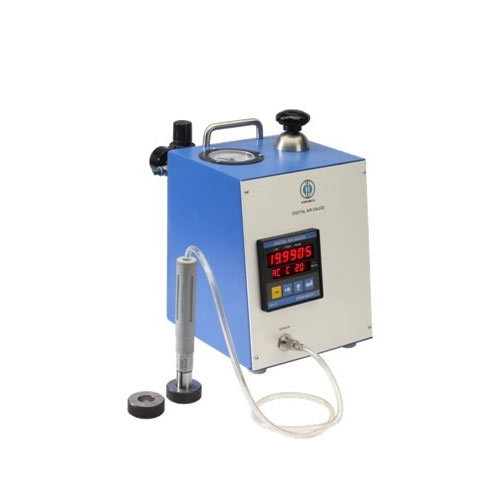
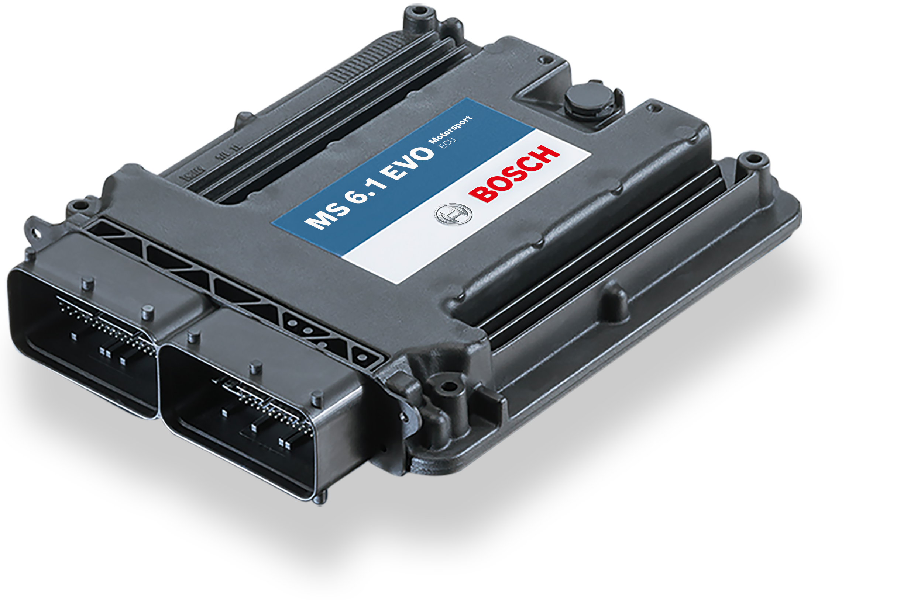
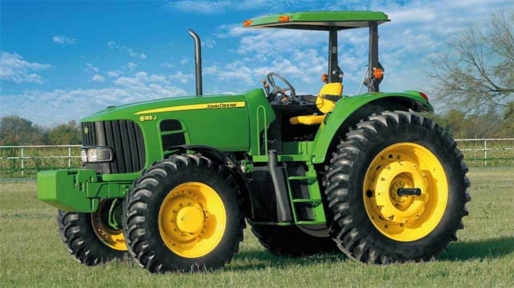

Automotive Embedded Professional 15 years of experience E/E Architecture & Design
Deep understanding of vehicle E/E architectures, particularly with PREEvision, including HPC, Zonal, and Gateway ECUs
In-Vehicle Networking (IVN): Proficient in CAN and DoIP communication design
Software Development & Integration: ECU software development and software integration
AUTOSAR: Strong experience with both Classic and Adaptive AUTOSAR, and combined systems
Leadership & Training: Technical Lead experience, plus Vector Professional Trainer and PREEvision Certified Application Engineer
Methodologies: Experienced in V-model SDLC and Agile (Rally)
Soft Skills: Good communicator, team player, problem-solver

Design, develop, code, test, and debug embedded software for microcontrollers and other embedded platforms
Develop and implement low-level drivers and firmware for various peripherals
Optimize code for performance, memory usage, power consumption, and real-time constraints

Combining different software modules developed by various teams functional software build
that can be deployed onto the Engine Control Unit hardware

Software Development: Requirement analysis and feasibility testing for new features Development and maintenance of legacy software (JDOS experience) Manual Embedded C coding Static and Dynamic code analysis for quality assurance Automotive Communication & Architecture CAN spreadsheet generation from requirements and design changes. PREEvision Hardware Architecture Modeling. Automated flow job for CAN Spreadsheet to .dbc file generation using Jenkins. Build & Testing: Creation of automated builds through Jenkins.Workbench system testing of ECUs.
E/E Architecture & Design: Deep understanding of vehicle E/E architectures, particularly with PREEvision, including HPC, Zonal, and Gateway ECUs. In-Vehicle Networking (IVN): Proficient in CAN and DoIP communication design. Software Development & Integration: ECU software development and software integration. AUTOSAR: Strong experience with both Classic and Adaptive AUTOSAR, and combined systems. Leadership & Training: Technical Lead experience,Vector Professional Trainer and PREEvision Certified Application Engineer.